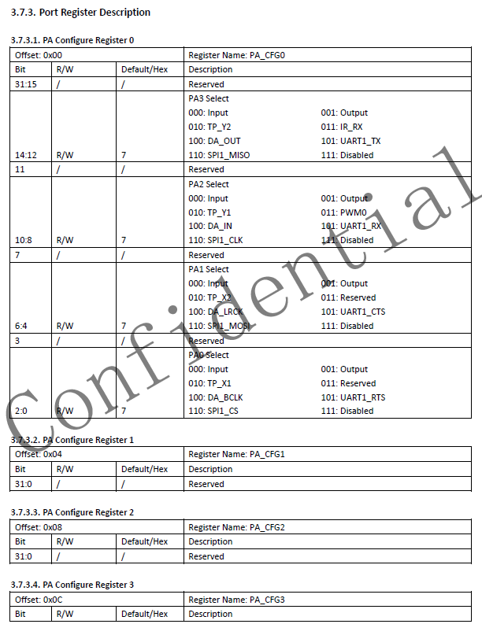
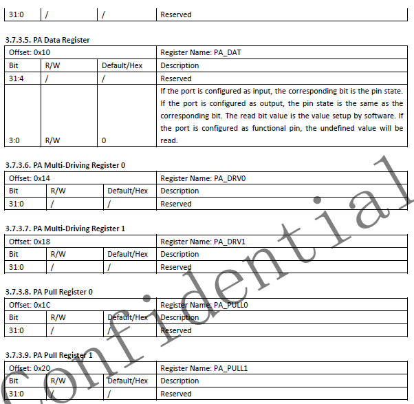

寄存器GPIO驱动
2023-02-01
目标
编写驱动，控制PA0输出高低电平。
F1C100S硬件接口
查找PA0的寄存器


通过上面寄存器发现，PA只有PA0-PA3可用作普通IO
且只需要PA Configure register 0 和 PA Data register 即可控制IO

GPIO基础地址：0x01c20800
GPIOA基础地址：0*0x24 + 0x01c20800 = 0x01c20800
Pa_CFG0: 0*0x24 + 0 + 0x01c20800 = 0x01c20800
Pa_DATA: 0*0x24 + 0x10 + 0x01c20800 = 0x01c20810
字符设备驱动
驱动程序
led.c
#include <linux/module.h>
#include <linux/kernel.h>
#include <linux/fs.h>
#include <linux/init.h>
#include <linux/uaccess.h>
#include <asm/io.h> //含有ioremap函数iounmap函数
#include <asm/uaccess.h> //含有copy_from_user函数和含有copy_to_user函数
#include <linux/device.h> //含有类相关的设备函数
#include <linux/cdev.h>
#define GPIOA_CFG0 (0X01C20800)
#define GPIOA_DATA (0X01C20810)
static dev_t led_dev_num; //定义一个设备号
static struct cdev * led_dev;
static struct class * led_class;
static struct device * led0;
size_t * gpioa_cfg0;
size_t * gpioa_data;
static int led_open(struct inode * inode, struct file * file)
{
/* GPIOA配置 */
*((volatile size_t*)gpioa_cfg0) &= ~(7<<0); //清除配置寄存器
*((volatile size_t*)gpioa_cfg0) |= (1<<0); //配置GPIOE10为输出模式
printk(KERN_DEBUG"open led!!!\n");
return 0;
}
static int led_close(struct inode *inode, struct file *filp)
{
printk(KERN_DEBUG"close led!!!\n");
return 0;
}
static int led_read(struct file *filp, char __user *buff, size_t count, loff_t *offp)
{
return 0;
}
static int led_write(struct file *filp, const char __user *buff, size_t count, loff_t *offp)
{
int ret;
size_t status;
ret = copy_from_user(&status,buff,4); //将用户空间拷贝到内核空间的status
if(ret < 0)
printk(KERN_DEBUG"write error!!!\n"); //输出信息
else
printk(KERN_DEBUG"write led ok!!!\n"); //输出信息
*((volatile size_t*)gpioa_data) &= ~(1<<0) ;//清除GPIOE12状态
if(status == 1)
*((volatile size_t*)gpioa_data) |= (1<<0);//设置GPIOE12状态1
return ret;
}
static struct file_operations led_ops =
{
.owner = THIS_MODULE,
.open = led_open,
.read = led_read,
.write = led_write,
.release = led_close,
};
static int __init led_init(void)
{
int ret;
led_dev = cdev_alloc(); //动态申请一个设备结构体
if(led_dev == NULL)
{
printk(KERN_WARNING"cdev_alloc failed!\n");
return -1;
}
ret = alloc_chrdev_region(&led_dev_num,0,1,"led"); //动态申请一个设备号
if(ret !=0)
{
printk(KERN_WARNING"alloc_chrdev_region failed!\n");
return -1;
}
led_dev->owner = THIS_MODULE; //初始化设备管理结构体的owner为THIS_MODULE
led_dev->ops = &led_ops; //初始化设备操作函数指针为led_ops函数
cdev_add(led_dev,led_dev_num,1); //将设备添加到内核中
led_class = class_create(THIS_MODULE, "led_class"); //创建一个名为led_class的类 /sys/class
if(led_class == NULL)
{
printk(KERN_WARNING"led_class failed!\n");
return -1;
}
led0 = device_create(led_class,NULL,led_dev_num,NULL,"led_A0");//创建一个设备名为led0 /dev/led0
if(IS_ERR(led0))
{
printk(KERN_WARNING"device_create failed!\n");
return -1;
}
gpioa_cfg0 = ioremap(GPIOA_CFG0,4); //将GPIOE_CFG0物理地址映射为虚拟地址
gpioa_data = ioremap(GPIOA_DATA,4); //将GPIOE_DATA物理地址映射为虚拟地址
return 0;
}
static void __exit led_exit(void)
{
cdev_del(led_dev); //从内核中删除设备管理结构体
unregister_chrdev_region(led_dev_num,1); //注销设备号
device_destroy(led_class,led_dev_num); //删除设备节点
class_destroy(led_class); //删除设备类
iounmap(gpioa_cfg0); //取消GPIOE_CFG0映射
iounmap(gpioa_data); //取消GPIOE_DATA映射
}
module_init(led_init);
module_exit(led_exit);
MODULE_LICENSE("GPL"); //不加的话加载会有错误提醒
MODULE_AUTHOR("1477153217@qq.com"); //作者
MODULE_VERSION("0.1"); //版本
MODULE_DESCRIPTION("led_dev"); //简单的描述
makefile
KERN_DIR = /home/xsx/licheepi_nano_tf/Linux
all:
make -C $(KERN_DIR) M=$(shell pwd) modules
clean:
rm -rf *.order *o *.symvers *.mod.c *.mod *.ko
obj-m += led.o
编译
编译驱动要使用 u-boot和linux相同的编译链
make ARCH=arm CROSS_COMPILE=arm-linux-gnueabi-
会按照makefile的规则编译出led.ko
测试程序
led_app.c
#include <sys/types.h>
#include <sys/stat.h>
#include <fcntl.h>
#include <stdio.h>
#include <unistd.h>
#include <string.h>
int main(int argc, char **argv)
{
int fd;
char *filename = NULL;
int val;
filename = argv[1];
fd = open(filename, O_RDWR);
if (fd < 0)
{
printf("err, can`t open %s\r\n", filename);
return 0;
}
if (argc != 3)
{
printf("usage: ./led_app.exe [device] [on/off]\r\n");
}
if (!strcmp(argv[2], "on"))
{
val = 0;
}
else if (!strcmp(argv[2], "off"))
{
val = 1;
}
else
{
printf("输入错误！\r\n");
return 0;
}
write(fd, &val, 4);
close(fd);
return 0;
}
编译
编译测试程序需要用 buildroot 生成 的交叉编译链
arm-linux-gcc led_app.c -o led_app.exe
运行
将led.ko 和 led_app.exe拷贝到开发板
加载驱动
insmod led.ko
出现loading out-of-tree module taints kernel.，即表明加载成功
运行测试程序
led亮： ./led_app.exe /dev/led_A0 on
led灭： ./led_app.exe /dev/led_A0 off
led_A0 为led.c驱动代码中设置的设备名称，驱动加载后，会在/dev/下创建该驱动的文件